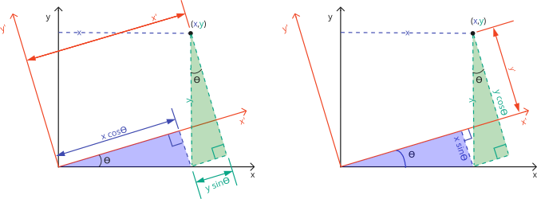

Matrix diagonalization
Contents
Matrix diagonalization#

Ortogonal matrices#

En forma matricial, la transformación del sistema de coordenas inicial al sistema de coordenados rotado por un ángulo \(\theta\) está dado por
Theorem 1#
If \(\boldsymbol{A}\) is Hermitic, e.g:
Then exists an unitary matrix \(\boldsymbol{V}\) e.g:
such that
where \(\boldsymbol{A}_{\text{diag}}=\operatorname{diag}(\lambda_1,\lambda_2,\ldots \lambda_n)\) is the diagonalized mass matrix.
Corollary 1#
If \(\boldsymbol{A}\) is symmetric, e.g:
Then exists an ortogonal matrix \(\boldsymbol{V}\), e.g:
such that
where \(\boldsymbol{A}_{\text{diag}}=\operatorname{diag}(\lambda_1,\lambda_2,\ldots \lambda_n)\) is the diagonalized mass matrix.
Eigenvector problem#
Note that each eigenvector, corresponding to each column of the matrix, is associated to each eigenvalue $\( \boldsymbol{V}=\begin{bmatrix} \boldsymbol{V}_1 \vdots \boldsymbol{V}_2\cdots \vdots \boldsymbol{V}_i \vdots \boldsymbol{V}_j\vdots\cdots \vdots \boldsymbol{V}_n \end{bmatrix}. \)\( where \)\boldsymbol{V}_i\( is the \)i\(-th column of the matrix \)\boldsymbol{V}$.
In this way, if we interchange the \(i\leftrightarrow j\) columns of the diagonalization matrix \(\boldsymbol{V}\), the order of the eigenvalues also change $$
\boldsymbol{V}_1 \vdots \boldsymbol{V}_2\cdots \vdots \boldsymbol{V}_j \vdots \boldsymbol{V}_i\vdots\cdots \vdots \boldsymbol{V}_n
\end{bmatrix}=\operatorname{diag}(\lambda_1,\lambda_2,\ldots,\lambda_j,\lambda_i,\ldots \lambda_n).
$$
This property is very important because usually the diagonalizationn alghoritm gives not the desired ordering of the eigenvalues and eigenvectors. It is recommended to use the np.c_ method for the eigenvector reoirdering
However, the Theorem only guarantees existence. Tor really calculate the diagonalization matrix we must establish the eigenvector problem:
We can use the unitary propery to write
or $\( \boldsymbol{A}\begin{bmatrix} \boldsymbol{V}_1 \vdots \boldsymbol{V}_2\cdots \vdots \boldsymbol{V}_n \end{bmatrix} =\operatorname{diag}(\lambda_1,\lambda_2\ldots,\lambda_n)\begin{bmatrix} \boldsymbol{V}_1 \vdots \boldsymbol{V}_2\cdots \vdots \boldsymbol{V}_n \end{bmatrix}. \)$ Therefore, the eigenvalue equation is just:
where \(\boldsymbol{V}_i\) is the \(i\)-th column of the matrix \(\boldsymbol{V}\), and \(\boldsymbol{I}\) is the identity matrix.
To avoid the trivial solution \(\boldsymbol{V}_i=\boldsymbol{0}\), we require that \(\boldsymbol{A}-\lambda_i\, \boldsymbol{I}\) does not have an inverse, or equivalently $\(\det( \boldsymbol{A}-\lambda_i\, \boldsymbol{I})=0\,.\)$
Example#
From arXiv:2010.06458:
In the three flavor neutrino oscillation, the neutrino flavor states \(\left|\nu_{\alpha}\right\rangle(\alpha=e, \mu, \tau)\) are linear superposition of mass eigenstates \(\left|\nu_{j}\right\rangle(j=1,2,3):\left|\nu_{\alpha}\right\rangle=\Sigma_{j} U_{\alpha j}\left|\nu_{j}\right\rangle,\) where \(U_{\alpha j}\) are the elements of the lepton mixing matrix known as PMNS (Pontecorvo-Maki-Nakagawa-Sakita) matrix such that $\( \left(\begin{array}{l} \left|\nu_{e}\right\rangle \\ \left|\nu_{\mu}\right\rangle \\ \left|\nu_{\tau}\right\rangle \end{array}\right)=\left(\begin{array}{lll} U_{e 1} & U_{e 2} & U_{e 3} \\ U_{\mu 1} & U_{\mu 2} & U_{\mu 3} \\ U_{\tau 1} & U_{\tau 2} & U_{\tau 3} \end{array}\right)\left(\begin{array}{l} \left|\nu_{1}\right\rangle \\ \left|\nu_{2}\right\rangle \\ \left|\nu_{3}\right\rangle \end{array}\right) \)\( The time evolution follows \)\left|\nu_{\alpha}(t)\right\rangle=\Sigma_{j} e^{-i E_{j} t} U_{\alpha j}\left|\nu_{j}\right\rangle,\( where \)E_{j}\( is the energy associated with the mass eigenstates \)\left|\nu_{i}\right\rangle$ This is a superposition state.
The observables associated to the three neutrinos are the entries of the \(3\times 3\) unitary matrix \(\boldsymbol{U}=\begin{pmatrix}\boldsymbol{U}_1\vdots\boldsymbol{U}_2\vdots\boldsymbol{U}_3\end{pmatrix}\), and the eigenvalues associated to each eigenvector \(\boldsymbol{U}_1\to m_1\), \(\boldsymbol{U}_2\to m_2\), \(\boldsymbol{U}_3\to m_3\). The normal ordering is \(m_1<m_2<m_3\). The unitary matrix can be parameterized in terms of three mixing angles, \(\theta_{23}\) \(\theta_{13}\), \(\theta_{12}\), and a complex phase, \(\delta_{\text{CP}}\), such that $\( \boldsymbol{U}=\left(\begin{array}{ccc} 1 & 0 & 0 \\ 0 & c_{23} & s_{23} \\ 0 & -s_{23} & c_{23} \end{array}\right) \cdot\left(\begin{array}{ccc} c_{13} & 0 & s_{13} e^{-i \delta_{\mathrm{CP}}} \\ 0 & 1 & 0 \\ -s_{13} e^{i \delta_{\mathrm{CP}}} & 0 & c_{13} \end{array}\right) \cdot\left(\begin{array}{ccc} c_{12} & s_{12} & 0 \\ -s_{12} & c_{12} & 0 \\ 0 & 0 & 1 \end{array}\right), \)\( where \)c_{i j} \equiv \cos \theta_{i j}\( and \)s_{i j} \equiv \sin \theta_{i j}\(. Thus, we can write \)\boldsymbol{U}\( as \)\( \boldsymbol{U}=\left(\begin{array}{ccc}c_{12} c_{13} & s_{12} c_{13} & s_{13} e^{-i \delta_{\mathrm{CP}}} \\ -s_{12} c_{23}-c_{12} s_{13} s_{23} e^{i \delta_{\mathrm{CP}}} & c_{12} c_{23}-s_{12} s_{13} s_{23} e^{i \delta_{\mathrm{CP}}} & c_{13} s_{23} \\ s_{12} s_{23}-c_{12} s_{13} c_{23} e^{i \delta_{\mathrm{CP}}} & -c_{12} s_{23}-s_{12} s_{13} c_{23} e^{i \delta_{\mathrm{CP}}} & c_{13} c_{23}\end{array}\right) \)\( so that \)\( \boldsymbol{U}_1=\begin{pmatrix}U_{e1}\\ U_{\mu 1}\\ U_{\tau 1}\end{pmatrix}=\begin{pmatrix} c_{12} c_{13} \\ -s_{12} c_{23}-c_{12} s_{13} s_{23} e^{i \delta_{\mathrm{CP}}} \\ s_{12} s_{23}-c_{12} s_{13} c_{23} e^{i \delta_{\mathrm{CP}}} \end{pmatrix},\qquad \boldsymbol{U}_2=\begin{pmatrix}U_{e2}\\ U_{\mu 2}\\ U_{\tau 2}\end{pmatrix}=\begin{pmatrix} s_{12} c_{13} \\ c_{12} c_{23}-s_{12} s_{13} s_{23} e^{i \delta_{\mathrm{CP}}} \\ -c_{12} s_{23}-s_{12} s_{13} c_{23} e^{i \delta_{\mathrm{CP}}} \end{pmatrix},\qquad \boldsymbol{U}_3=\begin{pmatrix}U_{e3}\\ U_{\mu 3}\\ U_{\tau 3}\end{pmatrix}=\begin{pmatrix} s_{13} e^{-i \delta_{\mathrm{CP}}} \\ c_{13} s_{23} \\ c_{13} c_{23} \end{pmatrix} \)$
After decades of experimental efforts with thousands of millions of dollars in investment and two recent Nobel prizes, most of the parameters are already measured (see PDG22020 ):

where \(\Delta m^2_{ij}=m^2_i-m^2_j\) is the squared mass difference between eigenvalues \(i\) and \(j\); and \(\text{eV}\) is really \(\text{eV}/c^2\) where \(c\) is the speed of light in vacuum in natural units with \(c=1\), and \(1\ \text{eV}=1.602\,176\,6208(98)\times 10^{-19}\ \text{J}\).
To a better measurement of \(\delta_{CP}\) for example, a new large experiment called DUNE, and with a cost of around \(\$1\,500\) million of dollars, is in construction in the United States

Theorem 2: Singular value decomposition (SVD)#
See SVD (where the Hermetique-conjugate is denoted with “*” instead that with “”)
A general complex matrix \(\boldsymbol{A}\) can be diagonalized by a bi-diagonal transformation such that
where \(\boldsymbol{A}_{\text{diag}}=\operatorname{diag}(\lambda_1,\lambda_2,\ldots \lambda_n)\) is the diagonalized mass matrix.
Demostration#
Since \(\boldsymbol{A} \boldsymbol{A}^\dagger\) is hermitic and \(\boldsymbol{A} \boldsymbol{A}^\dagger\) is diagonal, then in fact there exists an unitary matrix \(\boldsymbol{V}\). Similarly there exists an unitary matrix \(\boldsymbol{U}\) which diagonalizes \(\boldsymbol{A}^\dagger \boldsymbol{A}\)
Scipy implementation#
The implementation in scipy is based in the inverted relation
The implementation is trough the module scipy.linalg.svd:
V,Adiag,Udagger=linalg.svd(A)
Eigenvectors and eigenvalues#
If we make $\( \boldsymbol{U}=[\boldsymbol{U}_1\vdots\boldsymbol{U}_2\vdots\cdots\vdots\boldsymbol{U}_n], \qquad \boldsymbol{V}=[\boldsymbol{V}_1\vdots\boldsymbol{V}_2\vdots\cdots\vdots\boldsymbol{V}_n] \)$
We know that there exists a bi-diagonal transformación such that
not sum upon \(i\). Here
\(\lambda_i\) are called eigenvalues
\(V_i\) and \(U_i\) are the eigenvectors
We can use this to check the proper order of the eigenvalues
Transformation of a linear system#
We start again with the matrix equation, capitol bold letters denotes matrices
where \(\boldsymbol{A}\) is an \(n \times n\) matrix.
We know that there exists a bi-diagonal transformación such that
So, by doing standard operations we have
where
or
If \(\boldsymbol{A}_{\text{diag}}=\operatorname{diag}(\lambda_1,\lambda_2,\ldots \lambda_n)\), \(\boldsymbol{X}=\begin{pmatrix}x_1 & x_2 &\cdots & x_n\end{pmatrix}^{\operatorname{T}}\) and \(\boldsymbol{B}=\begin{pmatrix}b_1& b_2 &\cdots & b_n\end{pmatrix}^{\operatorname{T}}\), the solution of the system is given by
Note that
and the final solution is
Therefore $\(\boldsymbol{A}^{-1}=U\boldsymbol{A}_{\text{diag}}^{-1}V^\dagger\)$
Example#
A suitable way to introduce this method is applying it to some basic problem. To do so, let’s take the result of the Example 1:
As the matrix is symmetric \(\boldsymbol{U}=\boldsymbol{V}\) and \(\boldsymbol{V}^\dagger=\boldsymbol{V}^{\operatorname{T}}\)
import numpy as np
M1=np.array([[5,-4,0],
[-4,7,-3],
[0,-3,5]])
A=M1
A
array([[ 5, -4, 0],
[-4, 7, -3],
[ 0, -3, 5]])
Check if all eigenvalues are different from zero:
np.linalg.det(A)
49.99999999999999
B=np.c_[ [1,0,-2] ]
B
array([[ 1],
[ 0],
[-2]])
Also as
B=np.array([[1],[0],[-2]])
#or
B=np.reshape( [1,0,-2],(3,1) )
Theorem 1 in numpy#
WARNING: Only works for Hermitic matrices!
λ,V=np.linalg.eig( A )
A_diag=np.diag(λ)
A_diag
array([[11.09901951, 0. , 0. ],
[ 0. , 0.90098049, 0. ],
[ 0. , 0. , 5. ]])
V
array([[-5.07191124e-01, -6.18673713e-01, -6.00000000e-01],
[ 7.73342141e-01, -6.33988906e-01, 1.91548674e-16],
[-3.80393343e-01, -4.64005285e-01, 8.00000000e-01]])
(V@V.transpose()).round(15).astype(int)
array([[1, 0, 0],
[0, 1, 0],
[0, 0, 1]])
We first check the proper order of the diagonalization
(V.transpose()@A@V).round(14)
array([[11.09901951, 0. , 0. ],
[ 0. , 0.90098049, 0. ],
[ 0. , 0. , 5. ]])
(V.transpose().dot(A)).dot(V).round(14)
array([[11.09901951, 0. , 0. ],
[ 0. , 0.90098049, 0. ],
[ 0. , 0. , 5. ]])
Since
V
array([[-5.07191124e-01, -6.18673713e-01, -6.00000000e-01],
[ 7.73342141e-01, -6.33988906e-01, 1.91548674e-16],
[-3.80393343e-01, -4.64005285e-01, 8.00000000e-01]])
The final solution is:
A_diag_inv=np.diag(1/λ)
A_diag_inv
array([[0.09009805, 0. , 0. ],
[0. , 1.10990195, 0. ],
[0. , 0. , 0.2 ]])
check with np.linalg.inv(A_diag)
X=V@A_diag_inv@V.transpose()@B
X
array([[ 0.04],
[-0.2 ],
[-0.52]])
Activity: Usar np.lingalg.solve
np.linalg.solve(A,B)
array([[ 0.04],
[-0.2 ],
[-0.52]])
We can now check some properties.
For the case \(3\times 3\)
Obtain \(\theta_{12}\) for \(|\lambda_1|<|\lambda_2|<|\lambda_3|\) and, in the proper order $\( \boldsymbol{U}=\left(\begin{array}{ccc}c_{12} c_{13} & s_{12} c_{13} & s_{13} e^{-i \delta_{\mathrm{CP}}} \\ -s_{12} c_{23}-c_{12} s_{13} s_{23} e^{i \delta_{\mathrm{CP}}} & c_{12} c_{23}-s_{12} s_{13} s_{23} e^{i \delta_{\mathrm{CP}}} & c_{13} s_{23} \\ s_{12} s_{23}-c_{12} s_{13} c_{23} e^{i \delta_{\mathrm{CP}}} & -c_{12} s_{23}-s_{12} s_{13} c_{23} e^{i \delta_{\mathrm{CP}}} & c_{13} c_{23}\end{array}\right) \)$
import numpy as np
A=np.array( [[5,-4,0],
[-4,7,-3],
[0,-3,5]])
λ,V=np.linalg.eig( A )
A_diag=np.diag(λ)
λ
array([11.09901951, 0.90098049, 5. ])
V
array([[-5.07191124e-01, -6.18673713e-01, -6.00000000e-01],
[ 7.73342141e-01, -6.33988906e-01, 1.91548674e-16],
[-3.80393343e-01, -4.64005285e-01, 8.00000000e-01]])
Extract the first eigenvector
np.c_[ V[: ,0] ]
array([[-0.50719112],
[ 0.77334214],
[-0.38039334]])
associated with the eigenvalue
A_diag[0,0],λ[0]
(11.099019513592784, 11.099019513592784)
V0=np.c_[ V[:,0] ]
V1=np.c_[ V[:,1] ]
V2=np.c_[ V[:,2] ]
display(V0)
display(V1)
V2
array([[-0.50719112],
[ 0.77334214],
[-0.38039334]])
array([[-0.61867371],
[-0.63398891],
[-0.46400528]])
array([[-6.00000000e-01],
[ 1.91548674e-16],
[ 8.00000000e-01]])
Check: \( A V_i=\lambda_i V_i\)
Which means the eigenvalue associated to the “operator” \(A\) acting on the eigenvector \(V_1\)
print(f'{A@V0} =\n{λ[0]*V0}')
[[-5.62932419]
[ 8.58333952]
[-4.22199314]] =
[[-5.62932419]
[ 8.58333952]
[-4.22199314]]
print(f'{A@V1} =\n{λ[1]*V1}')
[[-0.55741294]
[-0.57121163]
[-0.41805971]] =
[[-0.55741294]
[-0.57121163]
[-0.41805971]]
print(f'{(A@V2).round(14)} =\n{(λ[2]*V2).round(14)}')
[[-3.]
[ 0.]
[ 4.]] =
[[-3.]
[ 0.]
[ 4.]]
The diagonalization matrix can be rebuild from the eigenvectors
V
array([[-5.07191124e-01, -6.18673713e-01, -6.00000000e-01],
[ 7.73342141e-01, -6.33988906e-01, 1.91548674e-16],
[-3.80393343e-01, -4.64005285e-01, 8.00000000e-01]])
is rebuild with
V=np.c_[ V0,V1,V2]
or with: np.hstack((V0,V1,V2))
V
array([[-5.07191124e-01, -6.18673713e-01, -6.00000000e-01],
[ 7.73342141e-01, -6.33988906e-01, 1.91548674e-16],
[-3.80393343e-01, -4.64005285e-01, 8.00000000e-01]])
( V.transpose()@A@V).round(14)
array([[11.09901951, 0. , 0. ],
[ 0. , 0.90098049, 0. ],
[ 0. , 0. , 5. ]])
Note that a sign of an egigenvalues can be changed:
V=np.c_[ V0,-V1,V2]
Eigenvector reordering#
Activity: https://beta.deepnote.com/project/17b487c8-b092-4032-94f5-438ba4eeb1e9
We can use this to check the proper order of the eigenvalues.
The order of eigenvalues can now be changed by changing the order of the eigenvectors and redifining the diagonalization matrix. For example, from small to large.
Then the proper order in the eigenvalues can be obtained
U=np.c_[ V1,V2,V0]
( U.transpose()@A@U).round(14)
array([[ 0.90098049, 0. , 0. ],
[ 0. , 5. , 0. ],
[ 0. , 0. , 11.09901951]])
U
array([[-6.18673713e-01, -6.00000000e-01, -5.07191124e-01],
[-6.33988906e-01, 1.91548674e-16, 7.73342141e-01],
[-4.64005285e-01, 8.00000000e-01, -3.80393343e-01]])
Once in the proper order, the mixing angles can be obtained $\( \boldsymbol{U}_1=\begin{pmatrix}U_{e1}\\ U_{\mu 1}\\ U_{\tau 1}\end{pmatrix}=\begin{pmatrix} c_{12} c_{13} \\ -s_{12} c_{23}-c_{12} s_{13} s_{23} e^{i \delta_{\mathrm{CP}}} \\ s_{12} s_{23}-c_{12} s_{13} c_{23} e^{i \delta_{\mathrm{CP}}} \end{pmatrix},\qquad \boldsymbol{U}_2=\begin{pmatrix}U_{e2}\\ U_{\mu 2}\\ U_{\tau 2}\end{pmatrix}=\begin{pmatrix} s_{12} c_{13} \\ c_{12} c_{23}-s_{12} s_{13} s_{23} e^{i \delta_{\mathrm{CP}}} \\ -c_{12} s_{23}-s_{12} s_{13} c_{23} e^{i \delta_{\mathrm{CP}}} \end{pmatrix},\qquad \boldsymbol{U}_3=\begin{pmatrix}U_{e3}\\ U_{\mu 3}\\ U_{\tau 3}\end{pmatrix}=\begin{pmatrix} s_{13} e^{-i \delta_{\mathrm{CP}}} \\ c_{13} s_{23} \\ c_{13} c_{23} \end{pmatrix}, \)\( so that \)\( \tan\theta_{12}=\frac{U_{e2}}{U_{e1}} \)$
θ_12=np.arctan( U[0,1]/U[0,0] )
θ_12, θ_12*180/np.pi
(0.7700763823614476, 44.122126612013574)
Implementation of an algorithm for reordering#
λ
array([11.09901951, 0.90098049, 5. ])
np.sort( np.abs(λ))
array([ 0.90098049, 5. , 11.09901951])
Returns the indices that would sort an array.
index=np.abs(λ).argsort()
index
array([1, 2, 0])
can be implemented in general with a comprehension list
V
array([[-5.07191124e-01, 6.18673713e-01, -6.00000000e-01],
[ 7.73342141e-01, 6.33988906e-01, 1.91548674e-16],
[-3.80393343e-01, 4.64005285e-01, 8.00000000e-01]])
For rebuild
np.c_[ tuple( [ np.c_[V[:,i]] for i in range(3) ] ) ]
array([[-5.07191124e-01, 6.18673713e-01, -6.00000000e-01],
[ 7.73342141e-01, 6.33988906e-01, 1.91548674e-16],
[-3.80393343e-01, 4.64005285e-01, 8.00000000e-01]])
And for reorder to index
U=np.c_[ tuple( [ np.c_[V[:,i]] for i in np.abs(λ).argsort() ] ) ]
U
array([[ 6.18673713e-01, -6.00000000e-01, -5.07191124e-01],
[ 6.33988906e-01, 1.91548674e-16, 7.73342141e-01],
[ 4.64005285e-01, 8.00000000e-01, -3.80393343e-01]])
or:
n=3
U=np.hstack( [ np.reshape( V[:,i], (n,1) ) for i in index ] )
( U.transpose()@A@U).round(14)
array([[ 0.90098049, -0. , -0. ],
[-0. , 5. , 0. ],
[-0. , 0. , 11.09901951]])
Implementation as function
def argeig(A):
λ,V=np.linalg.eig(A)
λ=np.array([λ[i] for i in np.abs(λ).argsort()])
V=np.c_[ tuple( [ np.c_[V[:,i]] for i in np.abs(λ).argsort() ] ) ]
return λ,V
λ,V=argeig(A)
λ,V
(array([ 0.90098049, 5. , 11.09901951]),
array([[-5.07191124e-01, -6.18673713e-01, -6.00000000e-01],
[ 7.73342141e-01, -6.33988906e-01, 1.91548674e-16],
[-3.80393343e-01, -4.64005285e-01, 8.00000000e-01]]))
#1.
λ,V=argeig(A)
λ,V
Out[1]:
(array([ 0.90098049, 5. , 11.09901951]),
array([[-6.18673713e-01, -6.00000000e-01, -5.07191124e-01],
[-6.33988906e-01, 1.91548674e-16, 7.73342141e-01],
[-4.64005285e-01, 8.00000000e-01, -3.80393343e-01]]))
#2.
( V.transpose()@A@V).round(14)
Out[1]:
array([[ 0.90098049, 0. , 0. ],
[ 0. , 5. , 0. ],
[ 0. , 0. , 11.09901951]])
#3.
print( np.linalg.det(A- λ[0]*np.identity(3) ) )
print( np.linalg.det(A- λ[1]*np.identity(3) ) )
np.linalg.det(A- λ[2]*np.identity(3) )
Activity: Build a function that diagonalize symmetric matrices with the eigenvalues in increasing order in the eigenvalues as a replacement of np.linalg.eig
def argeig(A):
l,V=np.linalg.eig(A)
....
return argl, argV
General matrix#
import numpy as np
from scipy import linalg
Example: Consider the following general real matrix without any specific symmetry
A=np.array([[ 6.666746440000001 , 3.1312125300000013],
[-0.23343504999999923, 5.890289299999999 ]])
In this case we need to make the bidiogalization process of Theorem 2 with the Singular value decomposition (SVD) implemented in Scipy
V,diag,Udagger=linalg.svd(A)
U=Udagger.transpose().conjugate()
A_diag=(V.transpose().conjugate()@A@U).round(14)
A_diag
array([[ 8., -0.],
[ 0., 5.]])
This is important to stablish that the eigenvectors are determined until ordering and permutations
V
array([[-0.8660254, -0.5 ],
[-0.5 , 0.8660254]])
U
array([[-0.70710678, -0.70710678],
[-0.70710678, 0.70710678]])
For a general matrix they are just ortogonal matrices
(U.transpose()@U).round(14)
array([[1., 0.],
[0., 1.]])
We define below a \(2\times 2\) orthogonal matrix:
def orthogonal(θ):
return np.array( [[np.cos(θ) ,np.sin(θ)],
[-np.sin(θ),np.cos(θ)]] )
π=np.pi
Vp=orthogonal(π/3)
Vp
array([[ 0.5 , 0.8660254],
[-0.8660254, 0.5 ]])
Note that, for \(V=[V_1\vdots V_2]\), after
Interchange \(V_1 \to V_2\) and \(V_2 \to V_1\)
\(V \to -V\),
we get \(V'\)
Up=orthogonal(π/4)
Up
array([[ 0.70710678, 0.70710678],
[-0.70710678, 0.70710678]])
Note that after
Interchange \(U_1 \to U_2\) and \(U_2 \to U_1\)
\(U \to -U\),
we get \(U'\).
Since the required trasformations in \(V\) and \(U\) are the same, the Theorem 2 is unnafected, only the order in the eigenvalues change to the normal ordering. In Fact
A_diag=(Vp.transpose()@A@Up).round(8)
A_diag
array([[ 5., -0.],
[ 0., 8.]])
Activity: https://beta.deepnote.com/project/17b487c8-b092-4032-94f5-438ba4eeb1e9
Activity: Solve the system $\( \boldsymbol{A} \boldsymbol{x}=\boldsymbol{B}\)\( for the previous \) \boldsymbol{A}\( matrix and \)\(\boldsymbol{B}=\begin{bmatrix} 1\\ -4\\ \end{bmatrix}\)$
Interpretations of Theorem 2#
Single Diagonalization matrix#
In Theorem 2 establishes a unique set of a matrices: \(A\) with its eigenvalues matrix, \(A_{\rm diag}\), and their eigenvectors matrices \(U\) and \(V\). However, for a fixed set of eigenvalues and eigenvectors we can have several possibilities of \(A'\) matrices. For example, if we fix \(U'=\boldsymbol{1}\)
so that
Therefore: Under this conditions, for a fixed set of eigenvalues and eigenvectors (associated to the matrix \(V'\)) there is a unique \(A'\) matrix
Example Let \(V'=U^{\operatorname{T}} V\) in the previous example. Find the matrix \(A'\) which gives rise to the same eigenvalues
Adiag=np.array( [[5,0],
[0,8]] )
Vp=orthogonal(np.pi/4).transpose()@orthogonal(np.pi/3)
Vp
array([[ 0.96592583, 0.25881905],
[-0.25881905, 0.96592583]])
Ap=Vp@Adiag
Ap
array([[ 4.82962913, 2.07055236],
[-1.29409523, 7.72740661]])
(Vp.transpose()@Ap).round(14)
array([[5., 0.],
[0., 8.]])
Finally, we can use the full procedure of hermitic matrices to obtain the bidiagonal matrices \(U,V\)
Example: Diagonalize the matrix \(A\) by using the Theorem 1 instead
A=np.array([[ 6.66674644, 3.13121253],
[-0.23343505, 5.8902893 ]])
A@A.transpose()
array([[54.25 , 16.88749537],
[16.88749537, 34.74999996]])
A.transpose()@A
array([[44.50000002, 19.50000001],
[19.50000001, 44.49999995]])
→ is obtained with <ALT GR>+i or, similarly: ↓←
λ2,V=np.linalg.eig( A@A.transpose() )
print(λ2,'→',np.sqrt(λ2))
#V=np.c_[ -V[:,0],V[:,0] ]
V
[63.99999999 24.99999997] → [8. 5.]
array([[ 0.8660254, -0.5 ],
[ 0.5 , 0.8660254]])
λ2p,U=np.linalg.eig( A.transpose()@A )
print(np.sqrt(λ2))
U
[8. 5.]
array([[ 0.70710678, -0.70710678],
[ 0.70710678, 0.70710678]])
(V.transpose()@A@U ).round(14)
array([[ 8., -0.],
[ 0., 5.]])
Actividad: Make the algorithm of reordering for theorem 2
Mixed terms#
Let:
Consider the quadratic equation
The quadratic equation is in terms of: \(M_{11}\), \(M_{12}\) y \(M_{22}\)
We can simplify this expression if we change to a new basis $\( X=\begin{bmatrix} A\\ Z \end{bmatrix} \)\( in which \)M\( is diagonal, in such a case the crossed term would disappear. The rotation from \)X’\to X$ is defined by
where \(V\) is the rotation matrix $\( V=\begin{bmatrix} \cos\theta & \sin\theta\\ -\sin\theta & \cos\theta \end{bmatrix}. \)$ Therefore
In the new basis
such that \(|\lambda_1|\le|\lambda_2|\), where
In this basis, the quadratic equation is in terms of eigenvalues and mixing angle, \(\theta\). Therefore, there are not longer mixed terms.
The diagonalization of quadratic equations can be straightforwardly generalized to \(n\)-th degree equations in terms of \(n\times n\) matrices
import numpy as np
g =0.64996
gp=0.35523
v=246.22046 #GeV
Example: Electroweak interactions#
To understand the electromagnetic and weak fundamental interactions, the mathematical formulation need to be done in one basis where the photon field, denoted with a symbol \(A\), is still not well defined. Instead, the field \(B\), the precursor of \(A\), appears along with the weak field \(W\), the precursor of the electroweak field \(Z\). In the mathematical basis we have then
and there, the symmetric mass matrix is calculated as (Details here: PDF)
M=(v**2/4)*np.array([[gp**2,-g*gp],
[-g*gp, g**2]])
M
array([[ 1912.52692086, -3499.32718938],
[-3499.32718938, 6402.67629426]])
Checking that the determinant is zero
np.linalg.det(M).round(8)
0.0
This imply that one egivanlue is zero
np.linalg.eigvals(M).round(12)
array([ 0. , 8315.20321512])
which means that the matrix rank, the number of non-zero eigenvalues, is 1
np.linalg.matrix_rank(M)
1
To make the change to the phyisical basis, $\( X=\begin{bmatrix} A\\ Z \end{bmatrix} \)\( through the rotation matrix \)\( V=\begin{bmatrix} \cos\theta_W & \sin\theta_W\\ -\sin\theta_W & \cos\theta_W \end{bmatrix}, \)$ the following transformation need to be established
such that \(V\) is the diagonalization matrix of \(M\)
with the normal ordering: \(|\lambda_1|\le|\lambda_2|\), and
\(V\) → Diagonalization matrix
\(V\) → Ortogonal matrix
\(V\) → Rotation matrix
To obtain the eigensystem, we use
λ,V=np.linalg.eig(M)
which in fact satisfy
( V.transpose()@M@V).round(12)
array([[ -0. , 0. ],
[ 0. , 8315.20321512]])
Since the first (zero) eigenvalue is the one associated to \(A\), we can interpret directly the rotation matrix without changing the order of the eigenvectors
V
array([[-0.87749437, 0.47958694],
[-0.47958694, -0.87749437]])
Note that in fact, the absolute value of the first element of the first eigenvector is the larger one and corresponds to the component along the \(B\)-axis.
Therefore
θ_W=np.arcsin( V[0,1] )
θ_W
0.5001839211647364
The eigenvalue associated to \(Z\) is
mZ=np.sqrt(λ[1])
mZ #GeV
91.18773610041056
corresponding to the \(Z\) mass in units of \(\text{GeV}/c^2\). As a reference, the proton mass is approximately \(1\ \text{GeV}/c^2\)
The physical observable associated to the weak mixing angle, \(\theta_W\), is (see PDF, along with the \(Z^0\) boson mass, \(m_Z\))
np.sin(θ_W)**2
0.23000362966286086
Corolary 1 Theorem II#
For a unique unitary \(n\times n\) matrix \(\boldsymbol{V}\) and a set of unique of eigenvalues \(\lambda_1,\lambda_2,\ldots\lambda_n\) there exists an infite set of mass matrices \(\boldsymbol{A}\), associated to the infinite sets of matrices \(\boldsymbol{U}\), such that $\( \boldsymbol{V}^\dagger\boldsymbol{A}\,\boldsymbol{U}=\boldsymbol{A}_{\text{diag}}\,, \)\( where \)\boldsymbol{A}_{\text{diag}}=\operatorname{diag}(\lambda_1,\lambda_2,\ldots \lambda_n)\( is the diagonalized mass matrix. In particular, if \)\boldsymbol{A}\( is hermitic then there is only one possibility for \)\boldsymbol{U}=\boldsymbol{V}\( and therefore \)\boldsymbol{A}$ is unique.
Corolary 2 Theorem II#
An unique hermitic mass matrix, \(\boldsymbol{A}\), can be generated from an infinite set of arbitrary matrices \(\boldsymbol{Y}\), such that \(\boldsymbol{A}=\boldsymbol{Y}^{\dagger}\boldsymbol{Y}\)
Example: Neutrino mass matrix#
Returning back to the neutrino mixing discussion, it is worth noticing that in the mathematical basis $\( N=\left(\begin{array}{l} \left|\nu_{e}\right\rangle \\ \left|\nu_{\mu}\right\rangle \\ \left|\nu_{\tau}\right\rangle \end{array}\right) \)\( the mass matrix, \)\mathcal{M}_\nu\( is non-diagonal. However, if we assume that it is hermitic, then an unitary tranformation (rotation in the symmetric case), \)\boldsymbol{U}\( ,can be defined to diagonal basis as \)\( \left(\begin{array}{l} \left|\nu_{e}\right\rangle \\ \left|\nu_{\mu}\right\rangle \\ \left|\nu_{\tau}\right\rangle \end{array}\right)= \boldsymbol{U}\left(\begin{array}{l} \left|\nu_{1}\right\rangle \\ \left|\nu_{2}\right\rangle \\ \left|\nu_{3}\right\rangle \end{array}\right), \)\( which is identified as the diagonalization matrix \)\( \boldsymbol{U}^\dagger \mathcal{M}_\nu \boldsymbol{U}=\operatorname{diag}(m_1,m_2,m_3). \)$
According to the corrolary there is a set of infinite matrices complatible with an unique \(\boldsymbol{U}\) and the eigenvalues \(m_1,m_2,m_3\)
Casas-Ibarra parameterization#
Consider a \(n\times n\) symmetric matrix \(A\). We can assumme without lost of generality that this can be generated from a matrix \(Y\) such that $\( A=Y^{\operatorname{T}}Y \)\( Theorem 1 gurantees that exists an ortogonal matrix \)U\( such that \)\( U^{\operatorname{T}} A U=U^{\operatorname{T}} Y^{\operatorname{T}}Y U=D_\lambda \)\( where \)\( D_{\lambda}=A_{\text{diag}}=\operatorname{diag}\left(\lambda_1,\lambda_2,\ldots,\lambda_n\right) \)\( where \)\lambda_i\( are the eigenvalues of \)A$. Therefore
where $\( D_{\sqrt{\lambda}}=\operatorname{diag}\left(\sqrt{\lambda_1},\sqrt{\lambda_2},\ldots \sqrt{\lambda_n}\right) \)\( Therefore, exists an ortogonal arbitrary matrix \)R\(, such that \)\( Y^{\operatorname{T}}Y =U D_{\sqrt{\lambda}}R^{\operatorname{T}}R D_{\sqrt{\lambda}} U^{\operatorname{T}} \)$
In this way, the matrix \(Y\) can be parameterized in terms of \(R\) as $\( Y=R D_{\sqrt{\lambda}} U^{\operatorname{T}} \)$
By using the previous equations, build a \(2\times 2\) \(Y\) matrix with the following conditions
\(R\) is an orthogonal matrix with a rotation angle as a random number between \((0,2\pi)\). Use your identification number as the seed of the random number generator.
The eigenvalues are \(\lambda_1=2\) and \(\lambda_2=4\).
\(U\) is a diagonalization matrix with mixing angle \(\pi/4\)
Build the matrix \(A\) and check that has the proper eigenvalues and eigenvectors
import numpy as np
#np.random.seed(98554575)
θ=np.random.uniform(0,2*np.pi)
def orthogonal(θ):
return np.array( [[ np.cos(θ), np.sin(θ)],
[ -np.sin(θ), np.cos(θ) ]] )
λ1=2; λ2=4
R=orthogonal(θ)
U=orthogonal(np.pi/4)
D_sqrtλ=np.diag( np.sqrt([λ1,λ2]) )
print('R=')
R
R=
array([[-0.97721326, -0.21225986],
[ 0.21225986, -0.97721326]])
From the equation for \(Y\)
Y=np.dot( np.dot( R,D_sqrtλ), U.transpose() )
Y
array([[-1.27739403, 0.67703248],
[-1.16972838, -1.5942481 ]])
The symmetric matrix is
#Unique mass matrix
A=np.dot( Y.transpose(), Y)
A
array([[3., 1.],
[1., 3.]])
λ,Unew=np.linalg.eig(A)
print('Eigenvalues={}'.format(λ))
print('U=')
Unew
Eigenvalues=[4. 2.]
U=
array([[ 0.70710678, -0.70710678],
[ 0.70710678, 0.70710678]])
After the reordering of the eigenvalues, we would obtain the original \(U\) and therefore
(U.transpose()@A@U).round(14)
array([[2., 0.],
[0., 4.]])
In this way, there is an infinity set of symmetric matrices \(A\) which have the same eigenvalues and eigenvectors
THDM CP-even masses and mixing#
Some times, the convention to identify the large projections in the non-diagonal basis.
In this case we have the rotation between an interaction basis and a physical basis defined as $$
$\( Since the diagonalization of a symmetric \)2\times 2\( matrix can be obtained analitically, here we build a \)2\times 2\( symmetric matrix from the eigenvalues, \)m_H\( and \)m_h\(, and the rotation angle, \)\alpha$, and check with the numerical results by using a benchmark point:
Here, the eigenvalue \(m_h\) is defined as the one with the eigenvector with the larger projection upon \(R_2\)
import numpy as np
from scipy import optimize
G_F=1.1663787E-5 #GeV^-2
v=1/np.sqrt(np.sqrt(2.)*G_F) # GeV
#********* BP9 ************
tanβ=2
sinβ_α=0.6 # sin(β-α)
m_h = 125 # GeV/c^2 (c→1)
m_H = 300 # GeV/c^2
m_A = 300 # GeV/c^2
m_Hp= 400 # GeV/c^2
m2_12=100**2 # (GeV/c^2)^2
#***********************
The formula for the mass matrix in terms of the previous parameters can be found in [hep-ph/0207010,arXiv:1507.00933]. We assumme here that \(\lambda_6=\lambda_7=0\). See Appendix D of [hep-ph/0207010] for full formulas
β=np.arctan(tanβ)
α=β-np.arcsin(sinβ_α) # <= np.pi/2~1.57
print('α=',α)
λ1 =(m_H**2*np.cos(α)**2+m_h**2*np.sin(α)**2-m2_12*np.tan(β))/(v**2*np.cos(β)**2)
λ_2 =(m_H**2*np.sin(α)**2+m_h**2*np.cos(α)**2-m2_12/np.tan(β))/(v**2*np.sin(β)**2)
λ3 =((m_H**2-m_h**2)*np.cos(α)*np.sin(α)+2*m_Hp**2*np.sin(β)*np.cos(β)-m2_12)/(v**2*np.sin(β)*np.cos(β))
λ4 =((m_A**2-2*m_Hp**2)*np.sin(β)*np.cos(β)+m2_12)/(v**2*np.sin(β)*np.cos(β))
λ5 =(m2_12-m_A**2*np.sin(β)*np.cos(β))/(v**2*np.sin(β)*np.cos(β))
λ345=λ3+λ4+λ5
λ345
α= 0.46364760900080604
1.63919914780058
def M2(β,λ1,λ_2,λ5,λ345,m2_12,v=246.2):
mA2=m2_12/(np.sin(β)*np.cos(β))-λ5*v**2
M11=λ1*v**2*np.cos(β)**2+(mA2+λ5*v**2)*np.sin(β)**2
M12=(λ345*v**2-(mA2+λ5*v**2))*np.sin(β)*np.cos(β)
M22=λ_2*v**2*np.sin(β)**2+(mA2+λ5*v**2)*np.cos(β)**2
return np.array( [[M11, M12],
[M12, M22]])
In this way, from the BP point, we can build the \(2\times2\) symmetric mass \(\mathcal{M}\):
ℳ2=M2(β,λ1,λ_2,λ5,λ345,m2_12,v=v)
ℳ2
array([[75125., 29750.],
[29750., 30500.]])
m2,V=np.linalg.eig(ℳ2)
By using the proper basis $\( \left(\begin{array}{cc} m_{H}^{2} & 0 \\ 0 & m_{h}^{2} \end{array}\right)=\left(\begin{array}{rr} \cos{\alpha} & \sin{\alpha} \\ -\sin{\alpha} & \cos{\alpha} \end{array}\right)\left(\begin{array}{ll} \mathcal{M}_{11}^{2} & \mathcal{M}_{12}^{2} \\ \mathcal{M}_{12}^{2} & \mathcal{M}_{22}^{2} \end{array}\right)\left(\begin{array}{lr} \cos{\alpha} & -\sin{\alpha} \\ \sin{\alpha} & \cos{\alpha} \end{array}\right). \)\( Therefore \)\( U=\left(\begin{array}{lr} \cos{\alpha} & -\sin{\alpha} \\ \sin{\alpha} & \cos{\alpha} \end{array}\right). \)\( Since \)-\pi/2\le\alpha\le\pi/2\( then \)\cos\alpha\ge 0\(. In this way, we must obtain \)\alpha\( from \)\tan\alpha\( to avoid ambiguities with a global sign in the second eigenvector \)\( \tan\alpha=\frac{\sin\alpha}{\cos\alpha}=-\frac{U_{01}}{U_{11}}\,. \)$
The eigenvector with large projection in the second component along \(R_2\) ( Interaction basis \((R_1,R_2)\) → Mass basis \((H^0,h^0)\)) is the associated with the standard model Higgs mass, \(m_h\)
V
array([[ 0.89442719, -0.4472136 ],
[ 0.4472136 , 0.89442719]])
if np.abs(V[0,1])<=np.abs(V[1,1]):
H=0; h=1
else:
H=1; h=0
(H,h)
(0, 1)
U=np.c_[ V[:,H],V[:,h] ]
U
array([[ 0.89442719, -0.4472136 ],
[ 0.4472136 , 0.89442719]])
M2diag=np.dot( np.dot( U.transpose(),ℳ2), U).round(9)
mH,mh=np.sqrt(M2diag[0,0]),np.sqrt(M2diag[1,1])
mH,mh
(300.0, 125.0)
tanα=-U[0,1]/U[1,1]
α=np.arctan(tanα)
if α>=-np.pi/2 and α<=np.pi/2:
print(α)
else:
print('Bad α range')
0.4636476090008061
np.cos(β-α)
0.8
np.sin(β-α)
0.5999999999999999
Analytical diagonalization from [arXiv:1507.00933]
Δ=np.sqrt( (ℳ2[0,0]-ℳ2[1,1])**2+4*ℳ2[0,1]**2 )
np.sqrt( [0.5*( ℳ2[0,0]+ℳ2[1,1]+Δ ),
0.5*( ℳ2[0,0]+ℳ2[1,1]-Δ ) ])
array([300., 125.])
Cosα,Sinα=( np.sqrt((Δ+ℳ2[0,0]-ℳ2[1,1])/(2*Δ)),
np.sqrt(2)*ℳ2[0,1]/np.sqrt(Δ*(Δ+ℳ2[0,0]-ℳ2[1,1])) )
print('U=')
np.array([[Cosα,-Sinα],[Sinα,Cosα]])
U=
array([[ 0.89442719, -0.4472136 ],
[ 0.4472136 , 0.89442719]])
print('cos(β-α)={}'.format(np.cos( β- np.arctan( Sinα/Cosα) )))
cos(β-α)=0.8
Activity#
Let $\( \boldsymbol{M}=\begin{bmatrix} 1 & 2\\ 3 & 4\\ \end{bmatrix} \)$ Choose the diagonalization method (A/B)
A:
np.linalg.eig(M)
B:
from scipy import linalg
linalg.svd(M)
from activities import *
x=input('A or B?\n')
activities(x,"7.1")